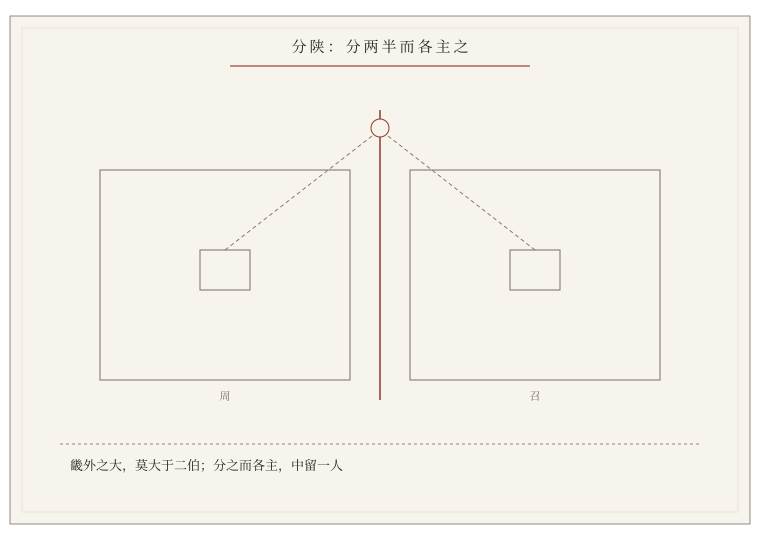

曲礼下 · 二·四十九 · 第 172 课
五官之长称「伯」，职主一方。注「谓为三公者，《周礼》：九命作伯」。
说什么事：三公加一命，出为分陕二伯。
落在哪一层：礼。论内外官之长。
为何编在此位：上节以「五官致贡」收一朝之制，此节起「伯」，由内朝转畿外。曲礼下自此论天下之称谓。
【经】五官之長曰「伯」，是職方。
【注】謂為三公者。《周禮》：「九命作伯。」職，主也，是伯分主東西者。《春秋傳》曰：「自陝以東，周公主之；自陝以西，召公主之；一相處乎內。」
【疏】此一节总论二伯，及州牧诸侯等称谓。「五官之长曰伯」，畿外之大，莫大于二伯，故此先言之也。「五官」者，即司徒以下五官也。云「长」者，谓三公无职，故不在五官之中，即三公加一命，出为分陕二伯者也。「伯」，长也，谓朝廷之长，言此二伯为内外官之长。「是职方」者，言二伯于是职主当方之事也。又案三公八命者，尧时为四伯，至尧之末，分置八伯，故《虞书传》云「元祀巡守四岳八伯」。舜之元祀有八伯，明尧末置之，夏则无文，殷则改置二伯，与周同。故《王制》云「八州八伯」，又云「天子之老二人，曰二伯」是也。
伯 注「长也」。疏「朝廷之长」「内外官之长」。
职方 职，主也。主当方之事。
九命 《周礼》命数之极。作伯。
分陕 自陕以东、以西分主。陕为今陕县一带。
一相处乎内 三公之一留相于朝内。
五官之长称「伯」，主一方之事。
一节只说两件事：谁是伯，伯管什么。伯是三公加命外放，管的是「方」不是「官」。此节为下五节立纲——天下之称，自此逐层而下。
第一层 三公不在五官 疏「三公无职，故不在五官之中」。三公不是官，是位。加一命才出为伯，才有职。此辨极重要：礼分「位」与「职」为二事。
第二层 伯之为长 疏两言「长」：朝廷之长、内外官之长。伯之尊不在爵，在他是内外之间的那一节。
第三层 分陕之制 注引《公羊》隐五年，周召分主东西，一相处内。天下之大，分两半而各主之，中间留一人。此制之稳，在于它不使一人专四方。
第四层 四伯八伯二伯之变 疏述尧时四伯、尧末八伯、殷改二伯与周同。同一个「伯」字，历代数目不同。读礼者须知制度是会变的，礼书所记只是其中一刻。
与今日何干 凡大区之制，总有一个「分片而治、中枢留人」的形状。分陕是这个形状最古老的一个样本。
| 左 | 右 |
|---|---|
| 五官之长曰伯 | 三公加一命，出为二伯 |
| 是职方 | 职主当方之事 |
| 三公无职 | 故不在五官之中 |
| 分陕东西 | 周公主东，召公主西 |
| 一相处乎内 | 三公之一留相于朝 |
| 四伯、八伯、二伯 | 三代之数不同 |
画一幅分陕之势：画幅中央偏上立一道竖线（示陕），线下分作左右两片等大的方区。左区中央一枚小方牌、右区中央一枚同形小方牌；两牌上方各引一道细线，汇于竖线顶端的一枚小圆（示一相处内）。两片之间不画墙，只以竖线相隔。不写文字、不画人。赭色只用在竖线顶端的那个小圆。
